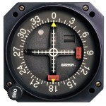

VOR Navigation is one of the most confusing concepts to teach not only to students pilots but some people who are already private pilots! The ability to navigate is vital. Can you navigate to any radial on the VOR from any position? How much intercept should you put in?
This simulation is going to take a subject as complex as VOR navigation and break it down so you can finally say “ah ha!” Enjoy the video…
As always leave me a comment afterward to let me hear your thoughts